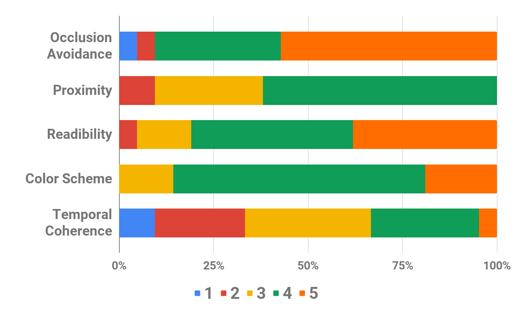

Abstract
In augmented reality (AR), the computer generated labels assist in understanding a scene by addition of contextual information. However, naive label placement often results in clutter and occlusion impairing the effectiveness of AR visualization. For label placement, the main objectives to be satisfied are: non occlusion to scene of interest, the proximity of labels to the object, and lastly, temporally coherent labels in a video/live feed. We present a novel method for the placement of labels corresponding to objects of interest in a video/live feed that satisfies the aforementioned objectives. Our proposed framework, SmartOverlays, first identifies the objects and generates corresponding labels using a YOLOv2 [28] in a video frame; at the same time, Saliency Attention Model (SAM) [7] learns eye fixation points that aid in predicting saliency maps; finally, we compute Voronoi partitions of the video frame, choosing the centroids of objects as seed points, to place labels for satisfying the proximity constraints with the object of interest. In addition, our approach incorporates tracking the detected objects in a frame to facilitate temporal coherence that enhances readability of labels. We measure the effectiveness of SmartOverlays framework using three objective metrics: (a) Label Occlusion over Saliency (LOS), (b) temporal jitter metric that we have introduced to quantify jitter in the label placement, (c) computation time for label placement.

Key Contribution
- We propose SmartOverlays, a multi-label placement framework on video frames/live feed. This method comprises of a Saliency Attention Model for computing visual saliency, a real-time object detector such as YOLOv2, followed by our novel label placement module. The label placement module utilizes Voronoi partitioning to avoid label/lead-line overlap and adaptive color scheme to facilitate contrastive label color for dynamic backgrounds.
- We introduce object tracking based methods on detected objects to place labels in a temporally coherent fashion. To evaluate the effectiveness of label placement, we introduce a temporal jitter metric.
- We introduce a metric, Label Occlusion over Saliency score (LOS), for measuring the effectiveness of overlay placement as there are no metrics to evaluate label occlusion.
The Idea

We take video frames as input to our pipeline which we pass to object detector and label generator module and SAM for saliency estimation. The object detector and label generator produce bounding box for all the detected objects along with their respective class labels. Thus it also creates object-label correspondences. SAM computes the saliency maps for each of the video frames. In the final module, we compute the overlay position for each label in a frame based on the object-label correspondences, saliency maps and placement objectives.
User Evaluation
The objective of user experiments was to find if our algorithm allowed human users to read the the textual labels best and to explore the shortcomings experienced by the subjects. User studies aid in new directions and extensions to our work based on comments. We recruited 21 subjects – 9, 4, 5, 3 subjects in the age group (A-20 − 25), (B - 26 − 30),(C 30 − 35), (D > 35) respectively. We had 13 male and 8 female human evaluators to test the algorithm in a research lab setting. Experiments involved the subjects to view 20 recorded videos,with different video resolutions, from the DIEM dataset which contained labels placed using SmartOverlays. This datasets consisted of varieties of videos from different genres of advertisements, trailers , tv-series with scenes varying from nature to animated cartoons. Also with eye movements, this dataset provides detailed eye-fixation saliency annotations. The users were tasked to rate the following label placement objectives for each video on a Likert rating scale ranging from 1 − 5, 5 being the highest rating.
The label placement objectives and the subjective metrics for user evaluation are listed below:
- Occlusion Avoidance: Does the label cover/overlap with the regions of interest? Here, a rating of 5 means no occlusion with the salient regions of the videos.
- Proximity: Is the label placed close to the corresponding object? A rating of 5 corresponds to the label being very close to the object of interest.
- Temporal Coherence: Are the labels jittery or jumpy? A rating of 5 means seamless transitions of labels in videos.
- Readability: Is the label readable in every frame ? A rating of 5 corresponds to the highest ease with which one can read especially the color of overlay box and text.
- Color Scheme: Does the label font color stand out with respect to the background? Here 5 means contrast between label and background is high and the algorithm used is adaptive in nature.
- Clarity: Do the connectors or the leader lines intersect? Answers could be Yes/No only.
The following graph shows the user ratings for different subjective metrics.

Results

Paper
For more details, please refer to the publication. Feel free to cite our work if you find it useful:
@inproceedings{hegde2020smartoverlays,
title={Smartoverlays: A visual saliency driven label placement for intelligent human-computer interfaces},
author={Hegde, Srinidhi and Maurya, Jitender and Kalkar, Aniruddha and Hebbalaguppe, Ramya},
booktitle={Proceedings of the IEEE/CVF Winter Conference on Applications of Computer Vision},
pages={1121--1130},
year={2020}
}
Demo Video
Check out the demo video here.